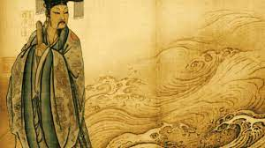

Três dinastias governaram a China entre o início do segundo milênio antes de Cristo e o ano 221 a.C.. Todas habitavam ao redor da Bacia do Rio Amarelo. Os Xia, Shang e Zhou foram as responsáveis pelo processo de ocupação do território chinês e pela formação étnica do país.
Antes mesmo da influência desta dinastia, por volta de 2,9 mil anos a.C., já eram registradas importantes invenções creditadas aos chineses, como a roda do oleiro, um grande avanço para modelar o vaso. Ainda hoje, esse é um dos mais usuais métodos para produzir vasos de barro.
O reinado da dinastia Xia, a mais antiga delas, começa em 2200 a.C. e vai até 1750 a.C., na região conhecida como Vale do Rio Amarelo. Os historiadores têm poucas evidências reunidas sobre a permanência da dinastia Xia, que começou com o reinado de Yu, o Grande, conhecido por atuar contra as inundações do rio Amarelo.
Por parte dos Xia, a China experimentou o desenvolvimento da agricultura, do comércio e da medicina. Colonos construíam as casas nas margens do rio Amarelo e, além do cultivo da terra, também mantinham animais. É também nesse período que surge a seda, confeccionada a partir do casulo do bicho-da-seda.
Dezessete imperadores reinaram durante esse período dinástico. A dinastia Xia teve importante papel na organização social dos chineses, sendo a responsável pela instituição do casamento. Também os trabalhos precursores da escrita, que seria aperfeiçoada pela sua sucessora, a dinastia Shang, que permaneceu de 1750 a.C. a 1040 a.C.
Em 221 a.C., Qin Shi Huangdi tornou-se o imperador da China unificada após quase 250 anos de guerra. O reinado de Huangdi dá início ao período da China imperial e é o responsável pela introdução do sistema de pagamentos, de pesos e medidas e da escrita.
Também nesse período começa a construção da Grande Muralha da China. Quin Shi Huangdi morreu em 210 a.C. e, para proteger seu túmulo, um exército de 10 mil soldados de cerâmica foi construído. Os guerreiros ficaram conhecidos como o Exército de Terracota e, embora tenham sido produzidos em série, exibem feições individuais.
Na China Antiga eram adorados mais de 200 deuses e deusas; contudo, se contarmos cada divindade e espírito, o número seria superior a 1000. Cada vila, cidade, aldeia, ou até mesmo um terreno isolado num cemitério tinha o seu próprio Tudi Gong – um espírito da terra, bastante cultuado. Existiam também espíritos da natureza, Kuei-Shen, que podiam viver tanto numa árvore como perto de um riacho, ou num jardim.
É geralmente aceito entre os budistas chineses e estudiosos dos estudos budistas que a figura chinesa Guanyin é a mesma figura conhecida na Índia como Bodhisattva Avalokitesvara . O budismo começou na Índia e se espalhou pela China através das rotas comerciais conhecidas como Rotas da Seda.
Avalokitesvara é o bodhisattva que representa a compaixão. O Sutra de Lótus , um dos textos mais importantes da , descreve Avalokitesvara extensivamente no Capítulo 25. Avalokitesvara também é um interlocutor no Sutra do Coração, o sutra curto, mas influente, sobre a perfeição da sabedoria.